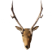
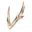

Eikthyr : emplacement, invocation et astuces
Eikthyr : emplacement, invocation et astuces
Eikthyr, le cerf de foudre, est le premier boss de Valheim. Il t'attend dans les Prairies et sert de test en douceur pour les bases : bloquer, esquiver et gérer son endurance.
| Biome | Prairies |
|---|---|
| Vie | 500 |
| Objet d'invocation |  2 × Trophée de cerf |
| Faible contre | – |
| Résistant à | – |
| Insensible à | – |
| Butin |  3 × Bois dur |
| Pouvoir de Déchu | 60 % d'endurance consommée en moins pour courir, sauter et nager. |
Eikthyr : afficher les autels sur la carte
Comment trouver Eikthyr
L'autel d'Eikthyr se trouve toujours dans les Prairies, en général à quelques centaines de mètres seulement du point d'apparition. La pierre runique rouge et lumineuse des pierres sacrificielles marque l'autel sur ta carte dès que tu la lis.
Pour l'invoquer, dépose 2 Trophées de cerf sur l'autel. Les cerfs lâchent un trophée environ une fois sur deux. Approche-les discrètement contre le vent ou chasse-les à l'arc.
Préparation
- Fabrique une armure en cuir complète et améliore-la une fois si tu peux.
- Prends une lance en silex, une hache en silex ou un bâton, un arc avec une cinquantaine de flèches et un bouclier en bois.
- Mange trois aliments différents avant le combat, par exemple de la viande de sanglier cuite, de la queue de Nixe grillée et des framboises ou des champignons.
- Dors avant, pour combattre avec le bonus En forme. Il accélère nettement la régénération de l'endurance.
Attaques
- Coup de bois : il bondit en avant et balaie avec ses bois. Bloque avec ton bouclier ou fais un pas de côté.
- Éclair : il se cabre et tire une ligne de foudre droit devant lui, surtout quand personne n'est à côté de lui. Esquive sur le côté.
- Piétinement de foudre : il se dresse sur ses pattes arrière et retombe en frappant tout ce qui l'entoure. Fais une roulade en arrière quand il se cabre.
Trucs et astuces
- Garde ton bouclier rond levé et attaque juste après chacune de ses attaques. Presque tout ce qu'il fait se bloque, même avec un simple bouclier en bois.
- Ne laisse jamais ton endurance tomber à zéro. Sans endurance, tu ne peux ni bloquer ni esquiver, et c'est comme ça que ratent la plupart des premières tentatives.
- Les rochers et les arbres autour de l'autel arrêtent sa foudre. Sers-t'en comme abri si tu préfères l'arc.
- Combats de jour. La nuit, les naingris et d'autres créatures s'en mêlent.
- Si le combat tourne mal, fuis. Eikthyr ne disparaît pas, et il garde un moment les dégâts que tu lui as infligés.
Récompense
Eikthyr lâche 3 Bois durs et son trophée. Les bois servent à fabriquer la Pioche de bois de cerf, ta première pioche, qui te permet de miner l'étain et le cuivre dans la Forêt noire et d'entrer dans l'âge du bronze.
Son Pouvoir de Déchu rend la course et les sauts bien moins coûteux. Il reste utile pendant tout le jeu, pour explorer, fuir et transporter du minerai.